작업 흐름
- 입력
- 주제 하나(레시피, 가사, 슬로건, 공지, 제품 …). 사용자의 음원이나 이미지가 있으면 함께
- 브리프
- 한 줄 요지, 비트 단위로 나눈 문구(배경이 되는 큰 글자 · 꼭 읽혀야 하는 글자 · 캡션), 템포와 화면 크기, 문구가 가리키는 소품과 그림, 포인트 색, 컷마다 스케일이 뒤집히는 샷 목록을 적은
BRIEF.md - 소품 · 그림
- 회전체 · 판 · 튜브 같은 키트 부품으로 주제마다 새로 설계한 3D 소품, 캔버스로 그린 표지판 · 줄무늬 그림. 필요하면 GLB 모델
- 확인
- 소품 네 방향 시트, 샷 시트, 샷 하나의 8프레임 스트립. 컷 속도 · 읽을 글자의 화면 안 여부와 시간 · 빈 샷 · 멈춘 샷 · 컷 전후 차이 · 깜빡임 · 색 비율 · 결정성 검사
- 출력
- 30fps MP4(기본 1350×1080, 킥 · 스네어 · 하이햇 · 베이스 합성 비트 또는 사용자의 음원), 반복 재생 라이브 페이지
cd kinetic-type-collage/examples/ramyeon
node ../../scripts/check.mjs index.html
node ../../scripts/render.mjs index.html --props --scale .4
node ../../scripts/render.mjs index.html --sheet --scale .4
node ../../scripts/score.mjs index.html --out out/film.wav
node ../../scripts/render.mjs index.html --audio out/film.wav
node ../../scripts/new-film.mjs ~/my-film요구 사항: Node + Playwright Chromium, ffmpeg. GPU · npm 설치 · API 키가 필요 없습니다(CPU WebGL에서 1350×1080 한 프레임 약 0.2초, 14초 예제를 워커 4개로 약 1분 30초). 단계별 순서는 SKILL.md에 있습니다.
샘플
원본 영상에 없는 주제로 브리프부터 새로 설계해 만든 예제의 장면, 검토 시트, 시작 템플릿입니다. 카드를 누르면 그 순간이 라이브 페이지에서 멈춘 채 열립니다. 화면 비율이 5:4라서 카드에서는 좌우에 여백이 있습니다.
「라면 4분 30초」 14.1초 · 20샷 · 128bpm
라면 끓이는 법을 가사처럼 읊습니다. 한글이 레시피를 말하고 라틴 글자가 외치거나 토를 답니다. 소품 10개와 표지판 4개는 모두 이 주제를 위해 코드로 만들었습니다
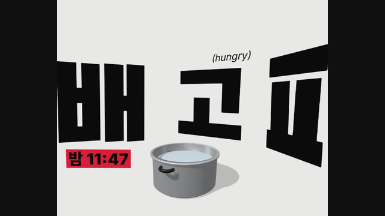
샷 1 · 2비트배고파 — 글자가 곧 세트글자 세 개를 3D 공간에 세우고 광각 카메라가 82° 휙 돌아 들어옴. 냄비는 글자 앞에서 회전
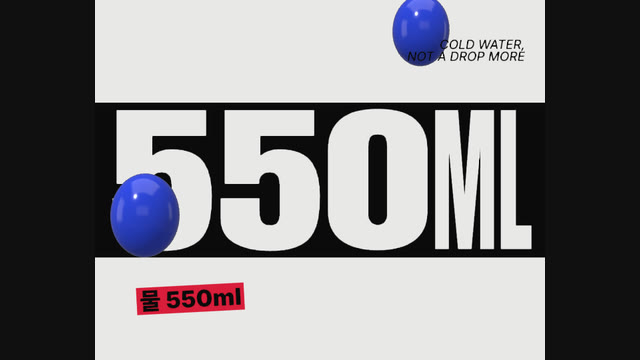
샷 5 · 2비트550ML — 띠 안에서 눌리는 글자숫자가 좁아지면 ML이 넓어지며 띠 폭을 항상 채움. 글자별 가로 늘림과 자동 재배치
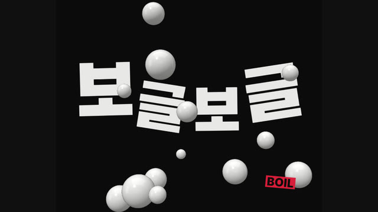
샷 7 · 2비트보글보글 — 검정 바탕글자가 차례로 튀고 방울이 올라감. 드럼은 킥과 베이스만 남김
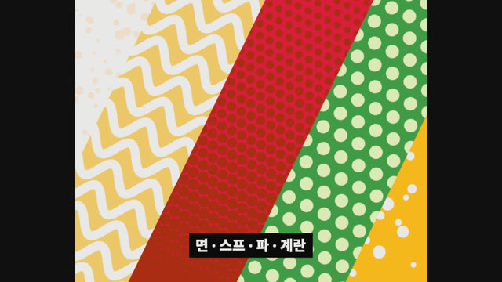
샷 9 · 2비트재료의 층 — 작은 견본에서 화면 가득 대각선으로세로 띠 다섯 개짜리 그림이 반 박자에 확대 · 회전. 띠마다 다른 채움 무늬
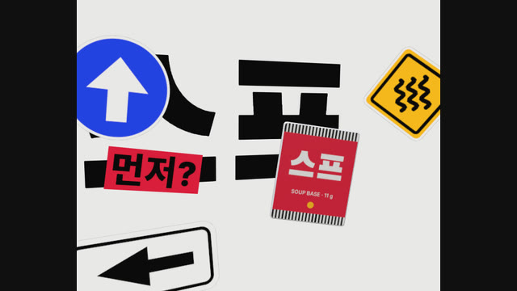
샷 10 · 2비트스프 — 날아오는 표지판테두리를 두른 평면 그림 세 장이 멀리서 렌즈 앞까지. 봉지는 읽히는 순간에 정면을 지나도록 회전
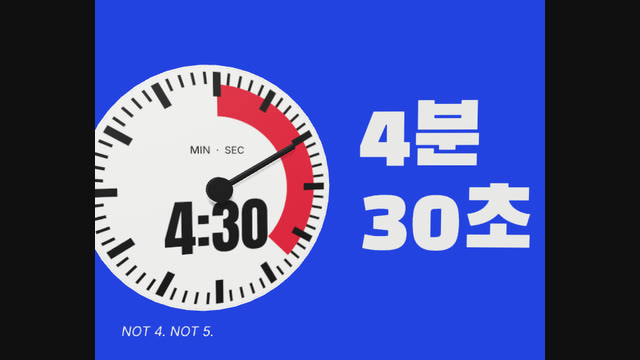
샷 11 · 2비트4분 30초 — 물건에 인쇄된 글자다이얼 면을 캔버스로 그려 붙인 소품, 포인트 색 바탕, 다이얼을 따라 도는 카메라
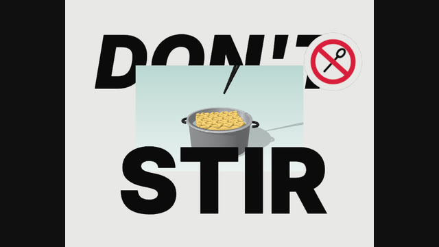
샷 12 · 2비트DON'T / STIR — 창 뒤의 글자, 창 앞의 글자3D 장면은 하늘색 창 안에만. 한 단어는 창 뒤, 한 단어는 창 앞. 드럼이 빠지고 라이저
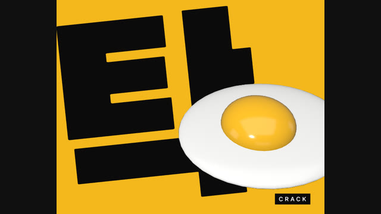
샷 15 · 1비트탁 — 멀리, 가까이, 깨짐반 박자씩 계란 멀리 · 가까이 뒤에 오는 세 번째 컷. 정적 다음의 첫 타격에 맞춤
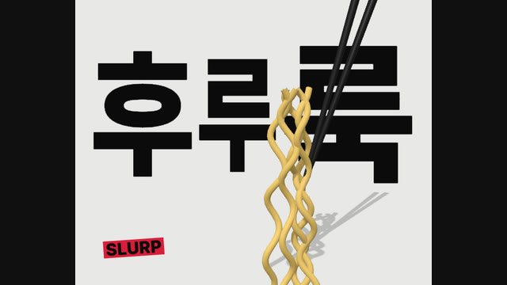
샷 17 · 2비트후루룩 — 면처럼 늘어나는 글자글자가 차례로 늘었다 줄고, 튜브로 만든 면발이 젓가락과 함께 올라감
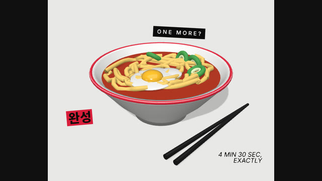
샷 18 · 2비트완성 — 한 그릇과 꼬리표회전체 그릇, 튜브 면발 9가닥, 앞에서 만든 계란과 파 소품을 다시 사용
검토 시트와 시작 템플릿 소품 · 샷 · 8초
샷을 쓰기 전에 소품을 네 방향에서 보고, 샷 시트에서 이웃한 컷의 스케일이 뒤집히는지 봅니다. 새 영상은 템플릿에서 시작해 문구 · 소품 · 샷을 주제의 것으로 바꿉니다
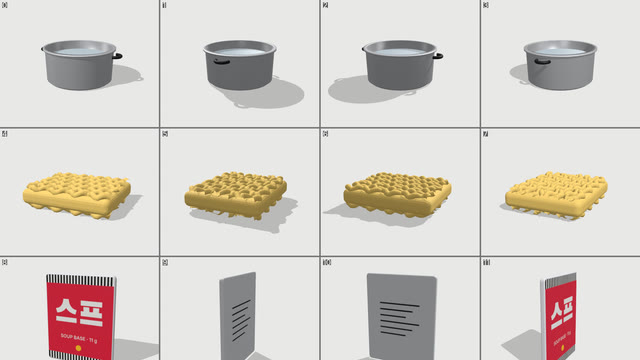
render.mjs --props소품 시트, 네 방향어느 쪽에서도 알아볼 수 있는지, 바닥에 붙어 있는지, 색이 날아가지 않는지
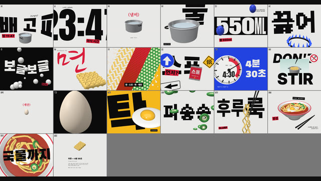
render.mjs --sheet샷 시트이웃한 두 칸이 한눈에 달라 보이는지, 읽을 글자가 온전한지
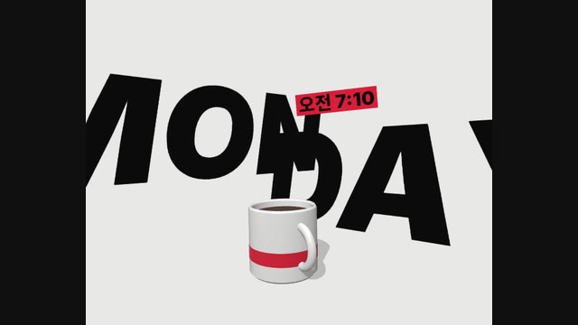
템플릿 · 샷 1「커피 먼저」 MON / DAY이탤릭 두 단어 사이를 지나는 카메라, 회전체로 만든 머그잔
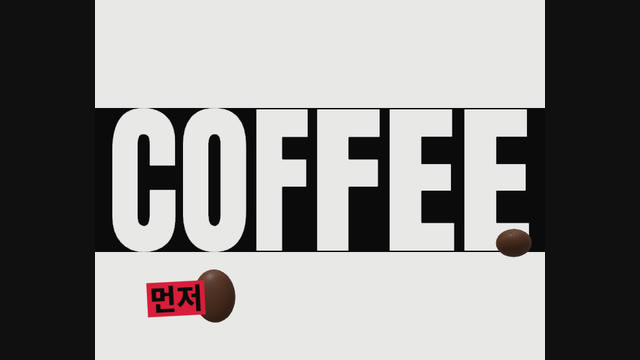
템플릿 · 샷 4COFFEE 띠띠 안에서 눌리는 글자, 그 위로 떨어지는 원두 아홉 알
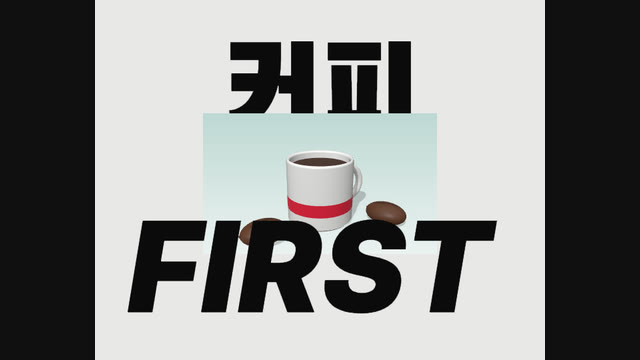
템플릿 · 샷 6커피 / FIRST 창창 뒤의 한글, 창 앞의 라틴
링크
- SKILL.md 워크플로
- 폴더 lib · scripts · templates · examples
- README.md 빠른 시작
- references/BRIEF.md 주제 → 브리프, 소품 · 스틸 검토 기준
- references/LOOK.md 원본에서 관찰한 화면 문법과 장치 목록
- references/ENGINE.md 샷 · 요소 · 값 · 카메라 · 검사 · 페이지 계약
- references/KIT.md 소품과 그림 설계, 키트 부품, GLB
- references/LESSONS.md 겪은 문제와 해결